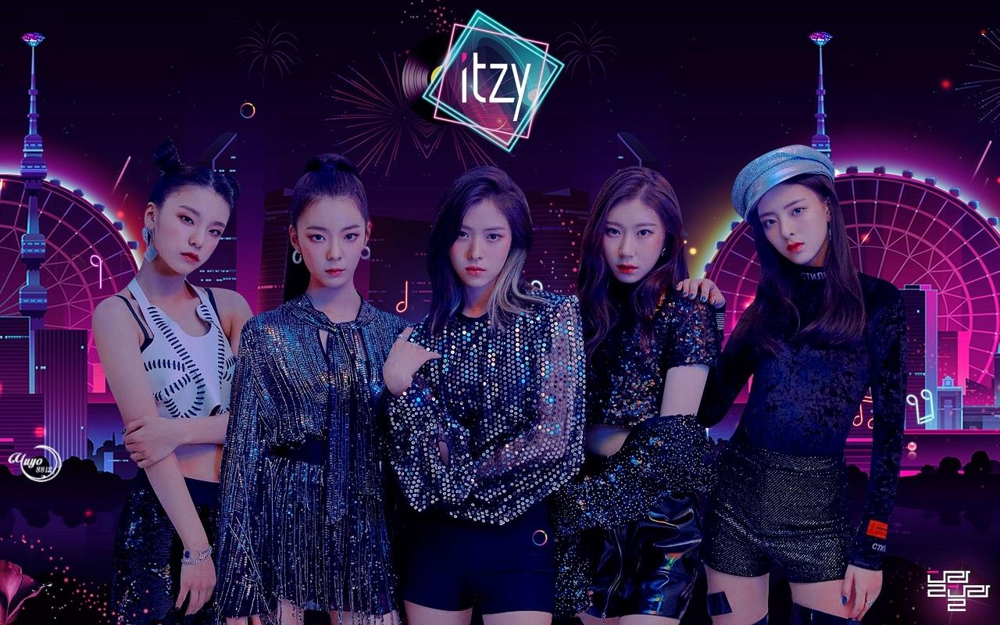
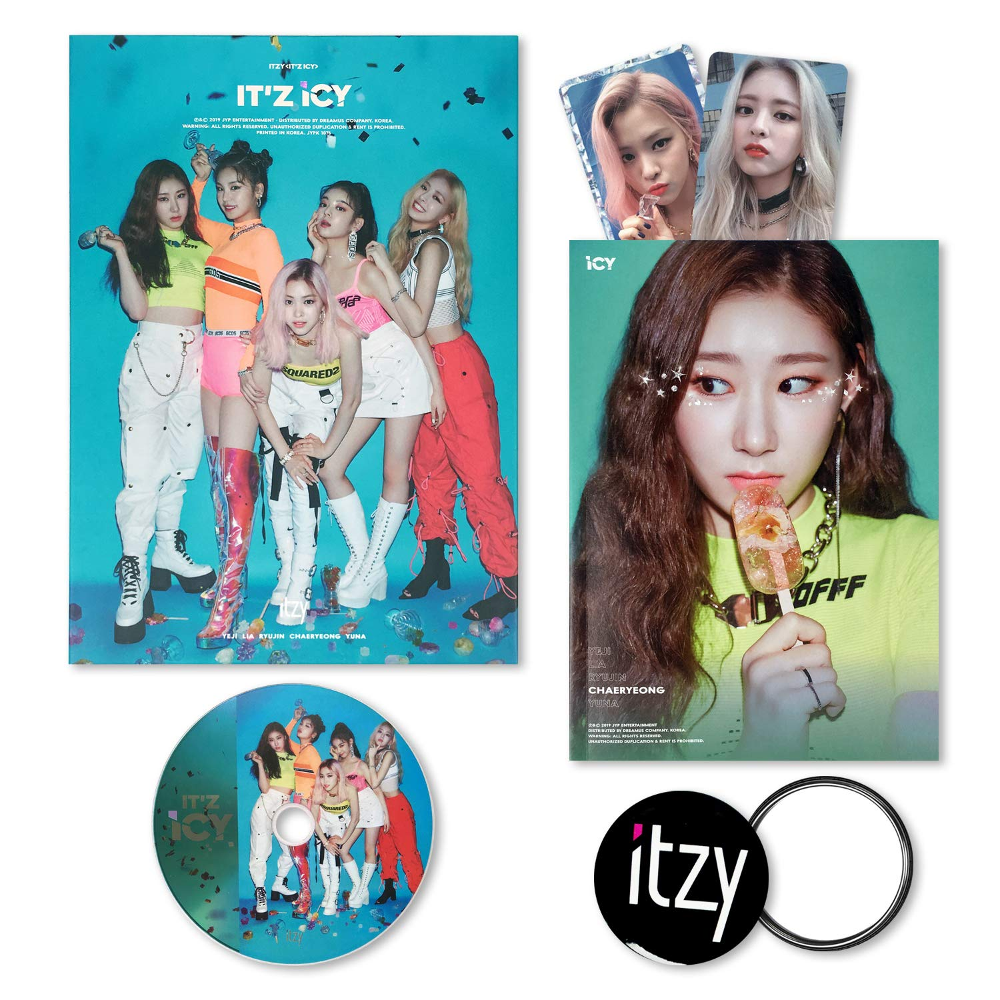

ITZY

Itzy adalah sebuah grup musik wanita Korea Selatan yang dibentuk oleh JYP Entertainment, dan anggotanya terdiri dari Yeji, Lia, Ryujin, Chaeryeong, dan Yuna. Grup ini debut pada tanggal 11 Februari 2019, ditandai dengan perilisan album singel mereka, It'z Different.
Sumber: Wikipedia
Album

Album atau album rekaman adalah suatu koleksi audio atau musik yang didistribusikan untuk publik. Distribusi paling umum adalah melalui perniagaan, walaupun sering juga didistribusikan secara langsung pada suatu konser atau melalui situs web. Secara umum, suatu rangkaian lagu dianggap sebagai suatu album jika memiliki susunan daftar lagu yang konsisten, kadang dengan sedikit perbedaan atau lagu tambahan pada beberapa bagian, atau jika album tersebut dirilis ulang pada waktu yang berbeda.
Sumber: Wikipedia
Lightstick
Lightstick merupakan benda atau tongkat yang memiliki ciri khusus terhadap suatu grupband.Biasanya digunakan sebagai bentuk dukungan pada idola saat konser sedang berlangsung. Tongkat atau Lightstick memiliki warna dan bentuk spesifik serta khas yang diberikan kepada masing-masing grup.